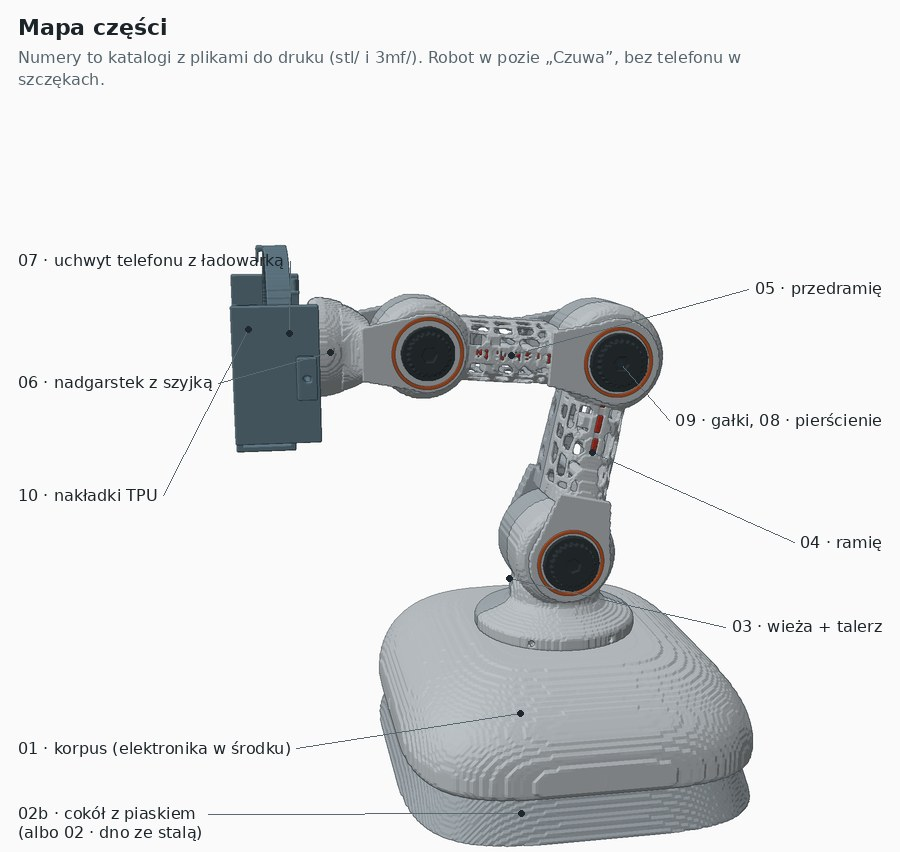
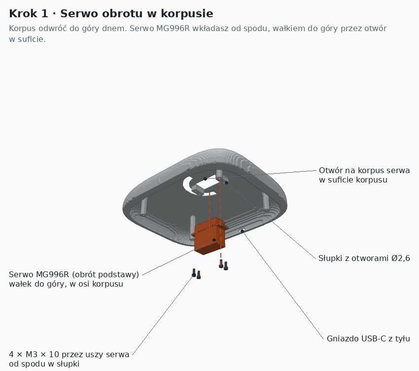
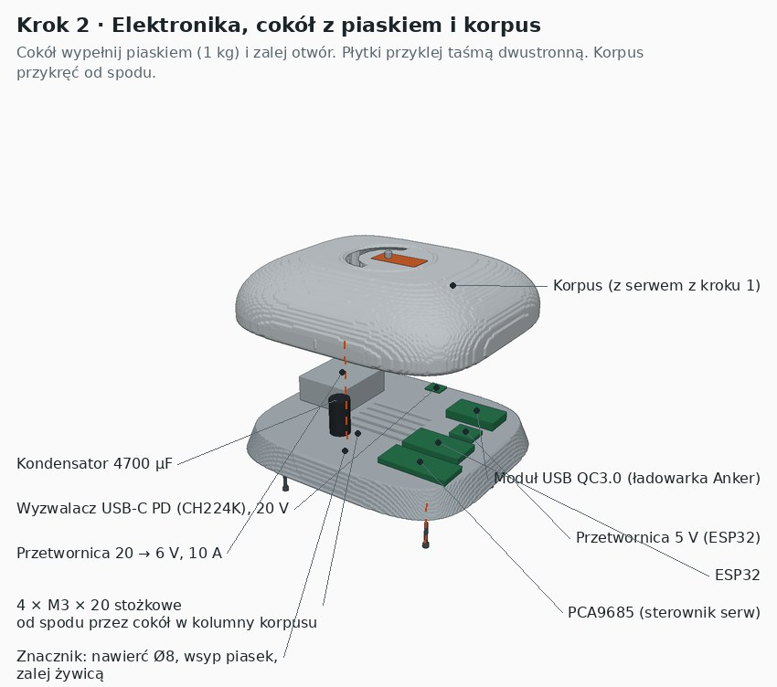
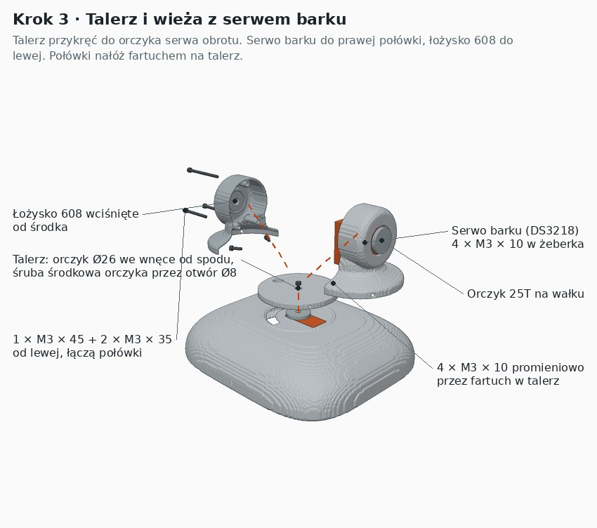
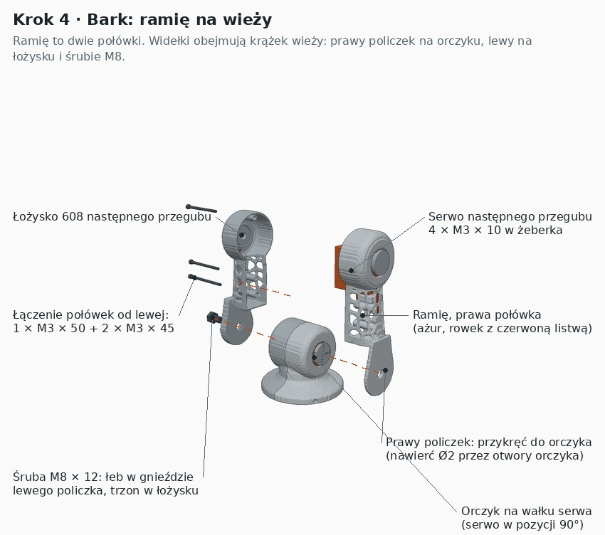
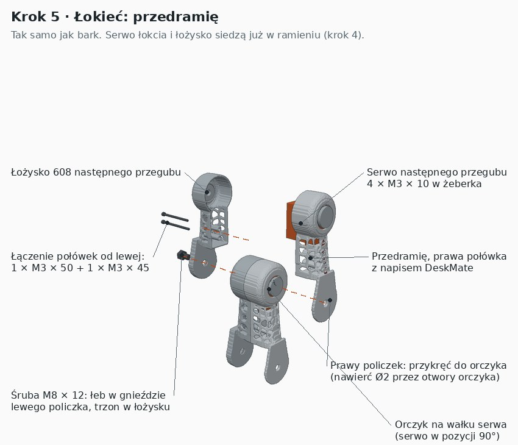
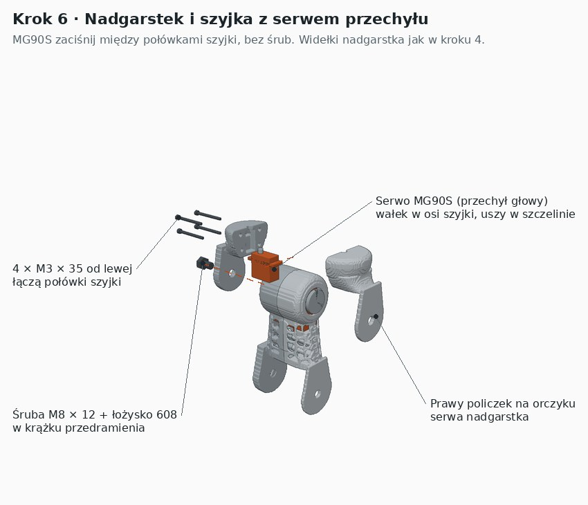
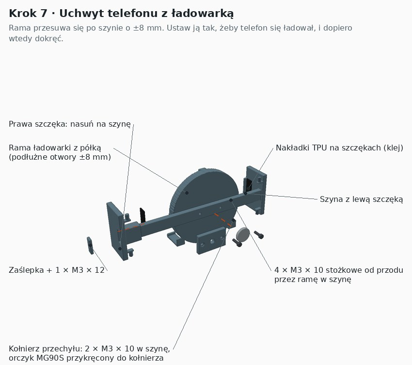
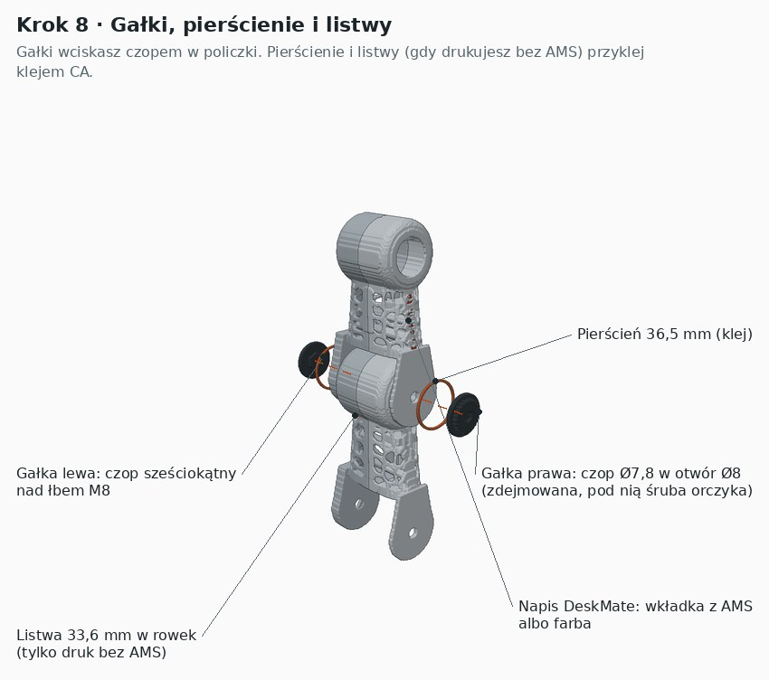

Instrukcja krok po kroku. Rysunki są wyrenderowane z tych samych plików STL, które drukujesz. Pomarańczowe kreski pokazują, gdzie część wraca przy składaniu. Ciemniejszy szary to lewa połówka, jaśniejszy to prawa.

00_test_pasowania i sprawdź łożysko 608, łeb M8 i czop gałki. Za ciasno? Popraw kompensację otworów w Bambu Studio.Każde ogniwo ma dwie połówki. W prawej siedzi serwo przykręcone przez uszy do żeberek. W lewej jest łożysko 608. Połówki skręcasz śrubami M3 wkładanymi od lewej strony, gdzie są pogłębienia na łby.

Uszy serwa leżą na słupkach. Jeśli Twoje serwo ma uszy niżej, podłóż podkładkę.

Dwie szczeliny wentylacyjne w środku cokołu muszą zostać odkryte. Nie zasłaniaj ich płytkami.

Kable zostaw z luzem, bo przy obrocie wieży ±90° przesuwają się w łukowej szczelinie korpusu.

Zanim przykręcisz policzek, sprawdź, czy ramię w pozycji 90° serwa stoi pionowo.

Napis DeskMate jest po prawej stronie przedramienia, a czerwona listwa po lewej.

Przed złożeniem ustaw MG90S na 90°, żeby telefon stał poziomo.

Rysunek jest od tyłu, więc prawa szczęka wypada po lewej stronie obrazka.

Gałka trzyma się luźno? Daj kroplę kleju na gorąco. Łatwo go usunąć, gdy trzeba dokręcić orczyk.
| Element | Ile | Gdzie |
|---|---|---|
| M3 × 10 | 20 | uszy 4 serw (16), talerz wieży (4) |
| M3 × 10 stożkowe | 4 | rama ładowarki do szyny |
| M3 × 10 (kołnierz) | 2 | kołnierz przechyłu do szyny |
| M3 × 12 | 1 | zaślepka szyny |
| M3 × 20 stożkowe | 4 | korpus do cokołu |
| M3 × 35 | 6 | wieża (2), szyjka (4) |
| M3 × 45 | 4 | wieża (1), ramię (2), przedramię (1) |
| M3 × 50 | 2 | ramię (1), przedramię (1) |
| M8 × 12, łeb sześciokątny | 3 | osie barku, łokcia i nadgarstka |
| Łożysko 608 | 3 | bark (w wieży), łokieć (w ramieniu), nadgarstek (w przedramieniu) |
| Orczyk okrągły 25T | 4 | obrót, bark, łokieć, nadgarstek |
To prototyp, który nie był jeszcze składany. Wymiary serw pochodzą z kart katalogowych, a klony różnią się o około 1 mm. Jeśli coś nie pasuje, opisz co, a poprawię pliki.